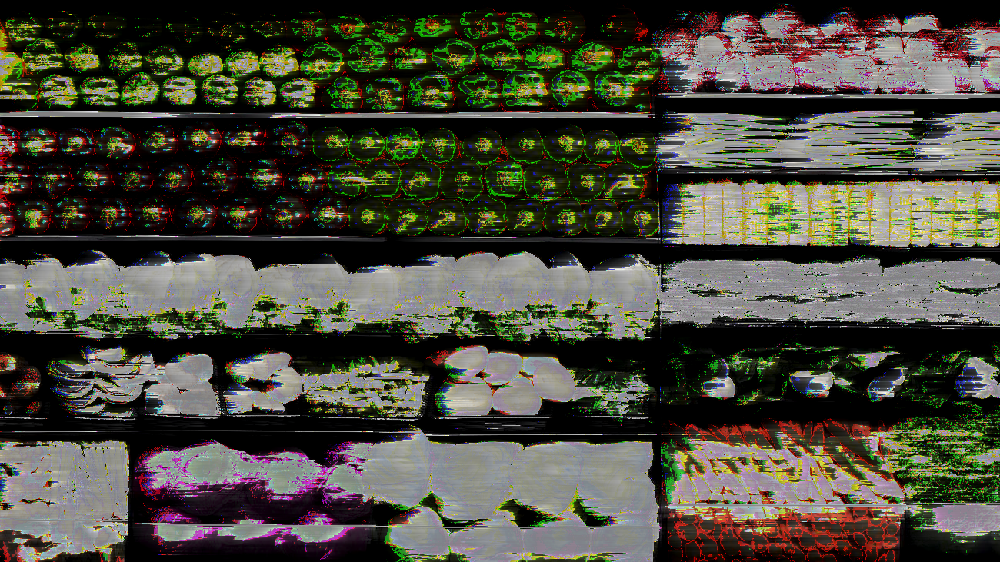
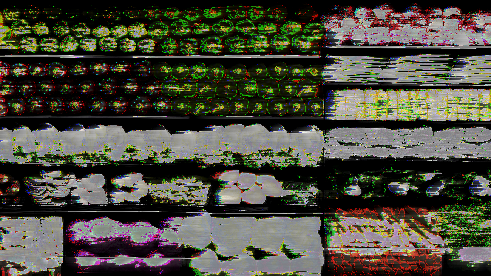

CHALLENGE: The challenge for this project was to
use opensource and other software to create and
control glitches in images.
SOLUTION: By using data moshing and data bending,
I was able to create a variety of glitches. My theme
for this assignment lies along the lines of the
different ways people view food. This includes foods
that are healthy versus unhealthy, foods that are
genetically modified to be perfect, and all the other
ways foods are controlled. Whether the food is
healthy, unhealthy, processed, organic, genetically
modified, etc., it's okay to eat the food you want to.
Foods labeled as GMOs or organic shouldn't define
the things that you eat, but it is how you choose to
eat as a whole that affects you and how your body
feels, mentally and physically.


 
